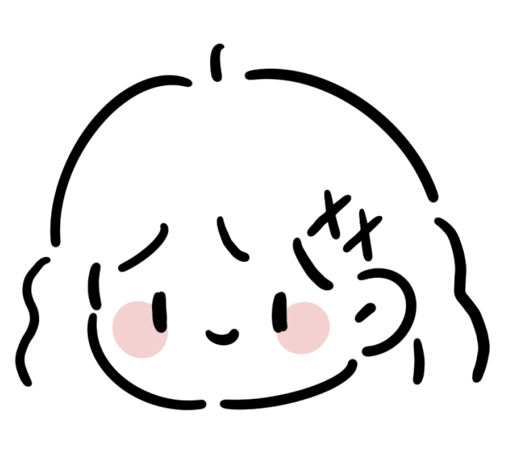

I am a student study at the London College of Communication, University of the Arts, studying BA Graphic Media Design.
My strengths lie in graphic poster design, book design, and brand identity, such as logos, patterns, and packaging design. However, I am committed to exploring other areas. For instance, this year I have ventured into creating flat animation videos, UI design, GIF design, and experimenting with video shooting and editing. I am continually learning various software and skills such as After Effects and C4D to design works with more diverse possibilities, also in preparation for my graduate studies application next year.

Beyond graphic design, I have many hobbies like photography, watching movies, pet care, and dancing. I am passionate about capturing all the beautiful things and memorable moments in the world. I believe these moments make up my complete life, so I deeply love artistic creation, as it allows me to record what I cherish.